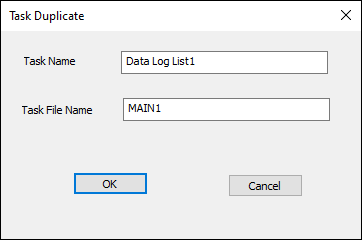
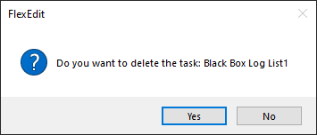
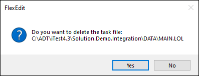
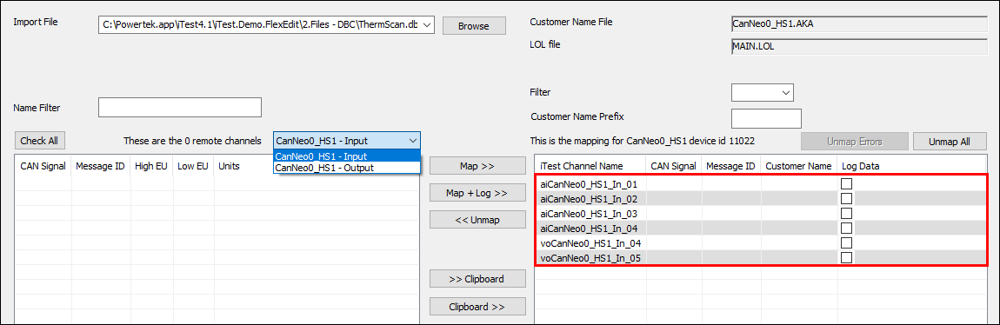
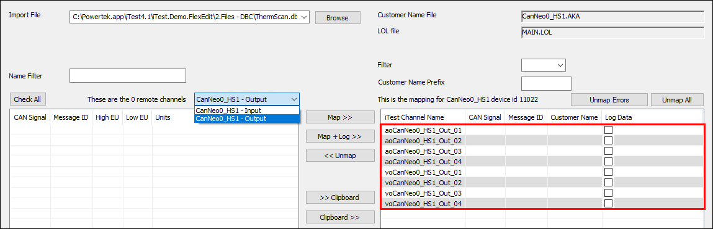

iTest User's Guide
This document contains a list of tags that can be used in the FlexEdit.xml file. For more information, refer to the FlexEdit Design Guide.
The tag for the Actions element of the XML file. This element is used to automatically perform one or more commands. These actions may be triggered through a global event or through events tied to a task.
Example:
<action>
<event>FIRSTSELECT</event>
<command>MAILSLOT</command>
<commandargs>Softpanel>>Hello World</commandargs>
</action>
This tag is only used for the AIM, AOM, and DYNCALC editors. You can specify an AKA file for these three editors to save new customer names to. If the specified AKA file is not found, then it will be created and set as an active AKA file.
 |
WARNING: | The file designated by this tag will not be included as part of an upload using the Server Upload feature. It is included as part of an upload using the Save Configuration feature. |
Example:
<akafile>AIMCustomerNames</akafile>
This tag is only used for the AIM and AOM editors when the <showalias2> is true. This is the text to use for the column header instead of Alias2.
Example:
<alias2label>AliasLabel</alias2label>
Normally, FlexEdit only allows one editor to be specified per file. This tag allows multiple editors to write to the same file.
Example:
<allowmultipletasks>
<file>$SUPPORTDIR\config.drv</file>
</allowmultipletasks>
This tag defines the background color of the window or tab. The color is defined by its RGB value (i.e., <red>,<green>,<blue>). For example, the color red has the RGB value of 255,0,0.
Example:
<backcolor>255,0,0</backcolor>
This tag specifies the background color for property and value fields in the INI editor. The color is defined by its RGB value (i.e., <red>,<green>,<blue>). For example, the color red has the RGB value of 255,0,0.
Example:
<backgroundcolor>255,0,0</backgroundcolor>
This tag only applies to the INI editor. It is used to specify the text for the button displayed at the bottom of the property grid when a BUTTON event is added to an INI task.
Example:
<buttontext>OK</buttontext>
When set to TRUE, the Messages and Signals buttons appear for CAN bus editing.
Example:
<candebug>TRUE</candebug>
The tag for the Categories element of the XML file. This element is used to define workflow categories.
Example:
<categories>
<category>
<name>Category</name>
<icon>C:\ADT\iTest4.3\ART\AND11.bmp</icon>
<tasks>
<task>
:
</task>
</tasks>
</category>
</categories>
This tag is only used for the Log Order List (LOL) editor and INI (INI) editor. It allows you to specify a list of either LOL or AKA files which are used to define the set of channels you can add to the current file. This feature should only be used for active customer name files; inactive AKA files should not be included in the list.
Example:
<channellistfiles>
<file>$SUPPORTDIR\data\mail.lol</file>
<file>$SUPPORTDIR\db\customer\caspc.aka</file>
</channellistfiles>
By default, this value is set to TRUE. When set to FALSE, task checkboxes can only be checked programmatically.
Example:
<checkable>TRUE</checkable>
This tag is used for FILE types in the INI editor. When set to TRUE, if the user types in a non-existent filename, then they will get an error message and will not be able to close the File Selection dialog.
Example:
<checkfileexist>TRUE</checkfileexist>
This tag is only used for the AIM and AOM editors. It is an indication to only add analog inputs and analog outputs to the display that have the User Defined1 RDB field value set to a non-zero value. The default value for this option is FALSE. When set to FALSE, all analog inputs and analog outputs are added to those displays. For more information, refer to the Customizing the AIM/AOM Editors documentation.
Example:
<checkuserdefined1>TRUE</checkuserdefined1>
The Column element is only supported for the LIM, AKA, AIM, and AIM editors. This element uses the <label>, <rdbfield>, and <readonly> tags. The <rdbfield> tag is required; however, the <label> and <readonly> tags are optional.
For the AIM and AOM editors, this element is used to specify read-only columns, not which columns will be displayed.
For the LIM editor, this element is used to configure the displayed columns. This applies to all instances of the editor and will only work with non-legacy limits (i.e., LimitsVer=3.2). If you are using legacy limits, and you specify the <globaleditor> element for LIM files in your FlexEdit.xml file, you will receive an error message and the traditional Test Manager version of the Limits editor.
The following fields are considered writable with this editor: Low Limit, Low Warning, High Warning, High Limit, Low Limit Action, Low Warning Action, High Warning Action, High Limit Action, Low Limit Ignore Time, and High Limit Ignore Time. The other RDB fields are considered read-only. You can also add the Module ID, Delay Time, and Limits Active columns, where their values from the limit group file or the module settings. These columns are added under the <rdbfield> tag.
 |
NOTE: | The first column will always be the channel name regardless of your configuration. |
For AKA editors, this element is used to configure the displayed columns. The default columns are Channel Name, Customer Name, Alias, and Units.
The following list details the editor's behavior depending on the tag's prescence:
Example:
<globaleditors>
<globaleditor>
<type>AKA</type>
<columns>
<column>
<label>CommentAlias</label>
<rdbfield>Alias</rdbfield>
</column>
<column>
<label>ChanName</label>
<rdbfield>Channel Name</rdbfield>
</column>
<column>
<label>Units</label>
<rdbfield>Units Label</rdbfield>
</column>
<column>
<label>Desc</label>
<rdbfield>Description</rdbfield>
<readonly>TRUE</readonly>
</column>
</columns>
</globaleditor>
</globaleditors>
The <command> tag defines what command to run as part of this action. This can be one of the following:
Commands
| Command | Description |
| SAVE | Saves the file. |
| CHECK | Checks the box on the tree view for this task. |
| MAILSLOT | Sends an iTest mailslot message. |
| EXE | Runs an executable or batch file. To run a batch file or vbscript, you must specify either cmd.exe or wscript.exe, respectively, in the <commandargs> tag followed by the file path and name of the batch file or vbscript you are attempting to run along with any additional arguments. |
| MSG | Puts up a message box for the user. |
| CLOSE | This action will close a file that is currently open in FlexEdit. You can specify the file path in the <commandargs> tag. If the file path is not specified, then it will close the file associated with the task containing the action. |
Example:
<command>SAVE</command>
This is the argument for the MAISLOT, EXE, and MSG commands. The mailslot arguments should be structured as mailslot>>message. The example below demonstrates how to send a message to the Softpanel message queue when a task is first entered.
Example:
<action>
<event>FIRSTSELECT</event>
<command>MAILSLOT</command>
<commandargs>Softpanel>>Hello World</commandargs>
</action>
This is the name of a channel that will be set to 0 before the action is started. After FlexEdit sets the channel value, the action is started. The channel must then be set to a non-zero value for FlexEdit to consider the action completed and continue on. If the <timeout> tag is missing, the default timeout value is used. The default timeout value is 10 seconds. This tag is optional.
Example:
<completechannel>ChannelName</completechannel>
When debugging is enabled, a separate log file ( FlexEdit_Debug_Date.log ) is created as well as a new window in the Output pane. Task file open and file save calls are logged in this file as well as any actions and events associated with a task.
Example:
<debug>FALSE</debug>
Disables functionality, at the task level, related to saving and restoring configurations and tasks. If a task includes this tag, then based on the <menu> tag value(s), the Server Upload/Download button will be disabled and/or the task will be skipped when performing File > Save Configuration..., File > Restore Configuration..., or File > Restore Tasks.... The relevant task actions will also not be performed.
Example:
<disablemenulist> <menu>Save Configuration</menu> <menu>Restore Configuration</menu> <menu>Restore Tasks</menu> <menu>Server Upload</menu> <menu>Server Download</menu> </disablemenulist>
Specifies the DLL to use for a DLL plug-in type editor. The following DLLs are supported:
For more information, refer to the Pre-Built Mapping DLLs documentation.
Example:
<dll>FlexEditAsap.dll</dll>
The <duplicate> tag is only supported by Schedule (SC2) and Log Order List (LOL) editors. This tag enables the Duplicate and Delete right-click options on a Task's node in the FlexEdit tree bar. The <duplicate> tag supports the following values:
|
NOTE: | The Delete option is only enabled when iTest Console or AutomationPanel is not running regardless of this tag's value. |
The Duplicate option will create a duplicate of the entire task as well as the associated <file>. You will be prompted to enter a new task label and file name for the duplicated task.
Task Duplicate

The Delete option allows you to delete a task and a task file for the selected node. In order to delete a task and/or task file via the Delete option, there must be more than one task within the category. You will be prompted separately to confirm the task and task file deletion; you must confirm deleting the task in order to delete the task file.
|
WARNING: | Choosing No in the Confirm File Deletion prompt will not stop the task node from being removed from the FlexEdit.xml file. |
Confirm Task Deletion Prompt

Confirm File Deletion Prompt

Example:
<duplicate>always</duplicate>
The tag for the Editor element of the XML file. This element is optional in many cases. For some files, the editor can be determined automatically based on the file extension. However, the Editor element can be used to override the default editor, and in some cases, is required to provide more information about a specific file type.
The following table summarizes the built-in rules of FlexEdit for assigning file extensions to editors and lists the available built-in editors:
File Extensions
| File Extension(s) | Editor |
| .2dt | The iTest Maps File editor. |
| .aka | The iTest Customer Name editor. |
| .als | The iTest Alias editor. |
| .dat | The iTest Dynamic Calculation editor. |
| .dll | The FlexEdit plugin. |
| .drv | The iTest Driver TDADDIN editor. |
| .dsp | The iTest Display (Runtime). |
| .exe | Launches the executable in a new window. Supports modal or modeless. |
| .ini | The Generic INI File editor. |
| .lim | The iTest Limit File editor. |
| .lol | The iTest Log Order List File editor. |
| .sc2 | The iTest SC2 editor. |
| .html, .pdf, .htm | Generic Browser View. Note that FlexEdit acts as a viewer, not an editor. |
| .txt, .log, .cfg | Generic text editor. |
Example:
<editor>
<type>INI</type>
</editor>
The <enableoverwrite> element is used to define the file paths that can be overwritten when using the Restore Configuration, Restore Tasks..., and Server Download features. By default, all file paths allow their files to be overwritten.
Example:
<enableoverwrite> <path>C:\</path> <path>D:\iTest4.3\Storage</path> </enableoverwrite>
The <event> tag defines what event the action is associated with. The event can be one of the following:
Events
| Event | Location | Details |
| SELECT | Task | An action designated with event SELECT will fire every time the task becomes the front-most editor in the right pane, including the first time. This can occur either by clicking on the node in the Tree Bar or by switching to its tab in the editor interface (right pane). A task is still considered the selected task, even if its editor is closed, until another task has been selected. |
| FIRSTSELECT | Task | The FIRSTSELECT event only occurs the first time a task becomes the front-most editor in the right pane. |
| UNSELECT | Task | Action occurs when a selected task is no longer selected. |
| BEFORESAVE | Task | Action is triggered before a successful save is reported. When used with Save All, only editors that have unsaved changes will trigger an action. |
| AFTERSAVE | Task | Action is triggered after a successful save is reported. When used with Save All, only editors that have unsaved changes will trigger an action. |
| BEFORESAVECONFIGURATION | Task | Triggered by both the Server Upload and Save Configuration operations. The action is not triggered if the operation is cancelled. |
| AFTERSAVECONFIGURATION | Task | Triggered by both the Server Upload and Save Configuration operations. The action is not triggered if the operation is cancelled. |
| BEFORERESTORECONFIGURATION | Task | Triggered by both the Server Download and Restore Configuration operations. The action is not triggered if the operation is cancelled. |
| Global | Triggered by Restore Configuration operations. The action is not triggered if the operation is cancelled. | |
| AFTERRESTORECONFIGURATION | Task | Triggered by both the Server Download and Restore Configuration operations. The action is not triggered if the operation is cancelled or if there is an error causing the restore/download to be aborted. |
| Global | Triggered by Restore Configuration operations. The action is not triggered if the operation is cancelled or if there is an error causing the restore/download to be aborted. | |
| ERRORRESTORECONFIGURATION | Task | Triggered by both the Server Download and Restore Configuration operations. The action is only triggered if there is an error during the restore which caused the operation to be aborted. An example error condition would be if a file was missing from the .zip file. This event prevents any following AFTERRESTORECONFIGURATION actions. |
| Global | Triggered by Restore Configuration operations. This event prevents any following AFTERRESTORECONFIGURATION actions. | |
| BUTTON | Task | The BUTTON event is only recognized by the INI editor. Adding this event to an INI editor task will cause a button to appear at the bottom of the property grid. Clicking it will run any BUTTON actions added to the Task. |
| CLICK | Task | The CLICK action is executed every time that a task is clicked on in the Tree Bar, regardless of whether it was already selected or the document was already open. |
Example:
<event>SELECT</event>
The BEFORESTORECONFIGURATION and AFTERRESTORECONFIGURATION events follow a specific timeline, as follows:
The <file> tag defines the file that is passed to the editor to work on. Most editors will be designed to work on one file at a time; however, some custom editors may actually read and write several files. This filename will be the primary filename that is passed to the editor.
When used with a pre-built mapping DLL, the <file> tag must list the config.drv file that the driver uses. In some cases, if the driver is associated with a module, then the filename will be <mid>.config.drv and not config.drv.
Example:
<file>$SUPPORTDIR\Sys.ini</file>
This tag is only used for the INI editor and enables you to load all module INI files that use the following naming convention:
[MID][Keyword].ini
Where:
This tag must be used in conjunction with the <file>allmodules</file> tag. For more information, refer to the Configure INI Editor to Display Module INI Files section.
Example:
<filenamesubstring>load</filenamesubstring>
For FILE types, this tag specifies the contents of the file type pull-down in the selection dialog. The example below demonstrates how to configure the filter to show TXT or INI files:
Example:
<filter>TXT Files (*.txt)|*.txt|INI Files (*.ini)|*.ini|</filter>
The <fixedchannel> tag is only supported for the DYNCALC type. Valid values are TRUE/FALSE, and the default value is FALSE. If set to TRUE, then the user will be unable to add/remove lines in the dynamic calculation file. The user will also be unable to change the Channel Name field. Calculations can be removed by clearing the Formula column. Doing so will cause the line to be commented out in the dynamic calculation file. The calculation for that channel can be re-enabled by adding a formula in the Formula column.
Example:
<fixedchannel>TRUE</fixedchannel>
The <fixedcol> tag is only supported for the LIM, AIM, AOM, and AKA types. It enables you to scroll through the editor horizontally while maintaining a fixed value of a defined column. All columns to the left of and including the specified column are visible, regardless of scrolling. This tag uses the following syntax:
<fixedcol>[RDB Field Name]</fixedcol>
Where:
Example:
<fixedcol>Customer Name</fixedcol>
This tag determines if the task's checkbox is shown. By default, this is set to TRUE, which displays the checkbox. When set to FALSE, the checkbox is not shown.
Example:
<hascheck>TRUE</hascheck>
This element defines the help information provided for a task. Some of the editors have built-in help, and the <help> tag overrides the built-in help text. The help text is displayed when the task is opened. Once the task is opened, the help information can be accessed via the Help button on the toolbar.
The height and width of the help dialog can be controlled using the height and width attributes. These attributes also impact the displayed dimensions of a browser control within this dialog.
Example:
<help height="100" width="200">Help Text</help>
HTML can be used by the <help> element in the following ways:
<help><![CDATA[<html>helloworld!</html>]]></help>
http:, https:, or file: if using this method. Use the following example for reference:<help>http://www.google.com</help>
<help>C:\ADT\iTest4.3\Execute\WWW\Help\UserGuide\FlexEdit.html</help>
The <hiddenchannels> element is only supported for the LIM type. Any channels that match the specified name(s) will not appear in the editor. Add a <name> tag underneath this element for each channel that is not to be listed. You can use asterisks as wildcards in the <name> tag. The example below demonstrates how to cause all channels that have the flg string to not be displayed:
Example:
<hiddenchannels> <name>*flg*</name> </hiddenchannels>
This tag specifies the homepage for the main HTML landing page within FlexEdit. The default value is:
<home>$SYSTEMDIR\Execute\WWW\FlexEdit.html</home>
The <icentral> tag is optional and supports a subfolder structure. It defines the subfolder used to store the uploaded files in regards to both the Server Upload and Server Download functionality. If using a LabCentral server, this would be a subfolder underneath the LabCentral Lab Files repository. If using a local network share via the <servershare> tag, then it would be a subfolder underneath that folder. For more information, refer to the Server Upload and Server Download documentation.
Example:
<icentral>FlexEdit</icentral> <icentral>FlexEdit\Solution.Demo</icentral>
This tag defines the icon that appears that appears in the tree for that category or task. This should be the full path to a filename on the local hard drive. The iTest macros, $SUPPORTDIR and $SYSTEMDIR, are supported in the filename. The file can be an EXE, an ICO, or a BMP file. In the case of an EXE file, the primary icon from the EXE is pulled. Category BMP files must be 32x32. Task BMP files must be 16x16.
Example:
<icon>$SUPPORTDIR\Art\Configuration_4.ico</icon>
This tag contains the name of an iTest channel that controls whether the task data can be saved. A value of zero allows the data to be saved. A non-zero value inhibits the saving of the data.
Example:
<inhibitsavechannel>voInhibitFlexEditSave</inhibitsavechannel>
For FILE or FOLDER types, this tag specifies the initial directory of the selection dialog when it is first displayed.
Example:
<initialdir>$SUPPORTDIR</initialdir>
This tag is only used for the Can and Asap pre-built DLL plugin editors. The tag provides for an automatic, case-sensitive filter of the list of available iTest channels for mapping when an Input interface is selected. Wildcards are not supported in the filter string. The Filter field in the editor can be used to further pare down this list.
Example:
In this example, the list of input channels has been filtered down to only displaying channels with "In" in the name.
<inputchannelfilter>In</inputchannelfilter>
Example of Input Channel Filter

For EDIT types, you can specify invalid text strings that should not appear in the entered text. If one of these values is found, you will get an error message. For some text, you must use the XML encodings (<, >, &, ", etc.). In addition, some characters (e.g., single whitespaces) might need to be enclosed with <![CDATA[ ]]> in order to work correctly.
Example:
<value>
<name>Edit1</name>
<type>EDIT</type>
<invalidtext>
<text><</text>
<text>></text>
<text><![CDATA[ ]]></text>
</invalidtext>
</value>
This tag defines the label or heading used for that cell in the editor. This label replaces the name in the cell.
Example:
<label>Label</label>
For EDIT or COMBO types, this is the maximum number of characters that can be typed in. For NUM types, it is the maximum number of digits in the integer portion of the numeric value. A plus or minus is included in the total. If the <precision> tag is also in effect, then the maximum number is increased by the value of <precision> plus one more for the decimal point. For example, the value -123.12 would have a <len> value of 4 and a <precision> value of 2.
Note that the <len> and <precision> tags control how the numeric value is displayed in the editor. They also control the check for the maximum number of digits that can be entered. If too many digits are entered, then the "Channel_xxx has too many digits, the limit is N" message will be displayed in a message box and the newly entered value will be discarded. The value of N is <len> plus <precision> plus one.
If this tag is missing, and <type>=NUM, the default <len> value is 16. For all other types, the default <len> value is 127.
Example:
<len>127</len>
The <limitinactivecolor> tag is only supported for the LIM type. If this color is specified, then rows where the channel limits are inactive will have the background color set to this color. The syntax for this tag is:
<limitinactivecolor>rgb(xxx,xxx,xxx)</limitinactivecolor>
This tag specifies the color of the lines that divide the fields.
Example:
<linecolor>0,0,255</linecolor>
For NUM types, the value you enter must be less than or equal to this value. If not, you will receive an error message.
Example:
<num>5</num>
The <maxchan> tag is only applicable to the LOL editor and defines the maximum number of channels that can be added to the LOL file.
Example:
<maxchan>200</maxchan>
The <maxvoltage> tag is only applicable to the AIM/AOM editors and defines the maximum value for the voltage range.
Example:
<maxvoltage>1500</maxvoltage>
This tag stores the name of the operation you want to disable. The full list of supported operations is detailed under the <disablemenulist> section.
Example:
<menu>Save Configuration</menu>
For NUM types, the value you enter must be greater than or equal to this value. If not, you will receive an error message.
Example:
<min>5</min>
The <minvoltage> tag is only applicable to the AIM/AOM editors and defines the minimum value for the voltage range.
Example:
<minvoltage>-1500</minvoltage>
When set to TRUE, you can launch an EXE style editor with the modal option. This will prevent the operator from interacting with FlexEdit until the EXE interface is dismissed.
Example:
<modal>TRUE</modal>
The name that appears in the tree for that category or task. In addition, this tag defines the header name of a section.
In the INI editor, this tag defines the name portion of the name=value pair listed in the INI file. When the INI editor is saved, FlexEdit will update both the value stored in the INI file and the iTest channel's value.
Example:
<name>Name</name>
The <name> tag can actually be a single channel name or a pair of channels. In the case of the channel pair, the two channels are separated by a comma. When the INI form is saved, the first channel will be populated with the filepath for the selected file, and the second channel will contain the base filename. This is helpful in getting around the iTest limitation of 128 bytes per Virtual String channel. Note that using a compound name is not supported when using the <nameonly> tag as there is no separate path to retrieve in this case.
Example:
<name>PathChan,FileChan</name>
For FILE and FOLDER types, only the specified file/folder name will be returned instead of the full path. The default value is FALSE.
Example:
<nameonly>FALSE</nameonly>
This element is only supported for LOL types. It allows you to specify the names of channels that cannot be removed from the LOL file. Add a <name> tag underneath this tag for each channel. Note that the specified name can use an asterisk (*) as a wildcard character to match multiple channel names. These settings will override any <nodeletenames> specified for <globaleditor>.
Example:
<nodeletenames>
<name>ChannelName</name>
</nodeletenames>
This tag is only used for the Can and Asap pre-built DLL plugin editors. The tag provides an automatic, case-sensitive filter of the list of available iTest channels for mapping when an Output interface is selected. Wildcards are not supported in the filter string. The Filter field in the editor can be used to further pare down this list.
Example:
In this example, the list of output channels has been filtered down to only displaying channels with "Out" in the name.
<outputchannelfilter>Out</outputchannelfilter>
Example of Output Channel Filter

Only files in this stored location may be overwritten by the Restore Configuration, Restore Tasks..., and Server Download features. Multiple <path> tags may be used. Any values must be lowercase.
Example:
<path>c:\</path>
This tag defines the picklist file to use for picklist or combo types.
Example:
<picklist>$SUPPORTDIR\Dmo1Ex.PKL</picklist>
The number of digits of precision for numeric types. Use 0 for integers. If this tag is missing, and <type>=NUM, then the default <precision> tag value of 6 is used. If the number of entered digits is less than the <precision> value, then the entry will be padded to the right with zeros. For example, if <precision>=6, and 0.12 was entered, then 0.120000 will appear in the editor.
Example:
<precision>6</precision>
The <readonly> tag is only used for the AIM, AOM, and INI editors. Its behavior is dependent on the editor type. If this tag is not used, then the behavior defaults to TRUE.
Example:
<readonly>TRUE</readonly>
This tag specifies the text color for read-only cells, rows, and columns in the spreadsheet. The LIM, AKA, AIM, AOM, CAV, LOL, ALS, DYNCALC, and INI editors are supported.
The <readonlytextcolor> tag has the following limitations:
Example:
<readonlytextcolor>128,128,128</readonlytextcolor>
For FOLDER types, this tag specifies the root of the file system tree in the Folder Selection dialog. No ancestors of the specified path will be selectable in the dialog.
Example:
<root>C:\ADT</root>
When set to FALSE, the file is not included when the operator saves an entire configuration via the Save Configuration option. By default, every file will be included in the save. The Save Configuration option will only be available to the operator if the config.ini file contains a reference to LabCentral. For more information, refer to the <saveitems> section.
Example:
<saveitem>FALSE</saveitem>
This element is used in conjunction with the Save Configuration and Server Upload operations to modify the files that are saved. For each file, add it under this tag and enclose it with the <item></item> tag.
If the task containing the element launches a plugin DLL, then the listed files will be saved in addition to the files normally saved by the plugin DLL. For all other types of tasks, the files listed under the <saveitemlist> tag will be saved instead of the default files normally saved by the task. For some editors, such as the AIM/AOM editors, it is strongly recommended that the default files are always included under this element because unexpected consequences may occur if these files are not included.
By default, the AIM and AOM editors include the calcoeffs.txt and all active FIL files.
Example:
<saveitemlist>
<item>$SUPPORTDIR\TestNotes.txt</item>
</saveitemlist>
This element allows you to designate additional files to be included in the ZIP file generated by the Save Configuration operation. These files will also be restored as part of the Restore Configuration operation. Since the Server Upload operation is only limited to the selected <task>, this element is not used by Server Upload. Use the <file> tags to designate the files to be saved.
Example:
<saveitems>
<file>$SUPPORTDIR\powertek.ini</file>
</saveitems>
When set to TRUE, the task name is displayed instead of the filename and path when the Save All Modified dialog appears.
Example:
<saveshowtask>TRUE</saveshowtask>
This tag begins the declaration of a specific section.
Example:
<section>
:
</section>
This tag specifies the background color for the header field.
Example:
<sectionbackgroundcolor>255,0,0</sectionbackgroundcolor>
When used as a child tag of the <tasks> element, this tag is used to specify a list of user groups that have access to the task. This tag is optional. If there are no groups listed, then all groups have access to the task. Logged in members of the Administrator group ignore this tag (i.e., they can always access a task). Multiple groups can be specified. In order to enable security in FlexEdit, iTest must have security enabled (i.e., iTestLogin=TRUE) and at least one task must have a specific group listed.
Example:
<sections>
<section>Engineers</section>
<section>Operators</section>
</sections>
This tag can also be used in the INI editor to declare sections for grouping properties.
This tag specifies the text color for the header field.
Example:
<sectiontextcolor>255,0,0</sectiontextcolor>
If you do not have LabCentral and want to save/restore specific files or full configurations, this tag will allow the use of a servershare without any revision control.
Example:
<servershare>\\server\sharename</servershare>
This tag is only used for the AIM and AOM editors. This tag will show the Alias2 column between the Channel Name column and the Customer Name column.
Example:
<showalias2>TRUE</showalias2>
When <values> are in effect, only the <name> or <label> that is listed in the <values> element is displayed. This tag forces the remaining data from the INI file to be displayed.
Example:
<showallchannels>TRUE</showallchannels>
For FOLDER types, this tag specifies whether the New Folder button will be available on the Folder Selection dialog. By default, this value is FALSE.
Example:
<shownewfolder>FALSE</shownewfolder>
When set to TRUE, the units are shown in an INI editor. This will show the channel name or prompt followed by the channel's units in braces if it has them (e.g., MaxSpeed [RPM]).
Example:
<showunits>TRUE</showunits>
By default, the data from the INI file is displayed in the same order as it appears in the INI file. When this tag is set to TRUE, the channel names (or labels) within each section will be sorted alphanumerically.
Example:
<sortvalues>TRUE</sortvalues>
When set to FALSE, the tabbed document view within FlexEdit is disabled. This will use a single document interface appearance as opposed to a multi-document interface.
Example:
<tabs>FALSE</tabs>
This tag declares the start of a workflow task.
Example:
<task>
:
</task>
This element is used to define the workflow tasks for a category.
Example:
<tasks>
<task>
:
</task>
</tasks>
When used as a child tag of a <task>, this tag defines the text or foreground color of the window or tab. When used in the INI editor, this tag defines the text color for the property and value fields. The color is defined by its RGB value (i.e., <red>,<green>,<blue>). For example, the color red has the RGB value of 255,0,0.
Example:
<textcolor>255,0,0</textcolor>
This tag is used in conjunction with the <completechannel> setting and should be set to a numeric value. This is the number of seconds that FlexEdit will wait for the <completechannel> to become non-zero. If the channel has not changed after this amount of time, then FlexEdit will issue a message in the Error window and will continue executing. This tag is optional.
Example:
<timeout>30</timeout>
This tag defines a single line tooltip that is shown when hovering over the node.
Example:
<tooltip>TooltipHelp</tooltip>
The <type> tag's behavior is dependent on its parent tag. This tag can be a child tag of the <editor>, <value>, and <globaleditor> tags.
When used in the <editor> tag, the <type> tag is used to override a given file extension with a different built-in editor, provide an editor to use for an unknown file extension, provide an editor to use with a pre-built mapping DLL, or define editors that are not related to a specific file. The generic types available are as follows:
When used with a pre-built mapping DLL, the <type> tag contains the name of the device as listed in the config.drv or <mid>.config.drv file.
Example:
<type>CanNeo0_HS1</type>
When used in the <value> tag, the <type> tag defines the field's data type in an INI editor. Values include:
Values
| Value | Description |
| NUM | Numeric value. |
| EDIT | Editable field. |
| PKL | Picklist. |
| COMBO | Editable field/picklist. |
| CHECKBOX | Checkbox field. |
| CHANNEL | Database channel. |
| FILE | File path. |
| FOLDER | Folder path. |
Notes:
When used in the <globaleditor> tag, the <type> tag specifies the file type that is being customized. The LOL, LIM, DYNCALC, AKA, AIM, and AOM types are supported.
If LabCentral is connected, the operator can upload and download individual files from LabCentral. This tag is used to disable the Upload button when set to FALSE. This will allow the operator read-only access to LabCentral. The default value is TRUE.
Example:
<upload>TRUE</upload>
This tag defines the values that are placed in a section for an INI editor. These values will be displayed as the properties within the header.
Example:
<values>
<value>
<name>Example</name>
<type>PKL</type>
<picklist>Dmo1Ex.PKL</picklist>
</value>
</values>